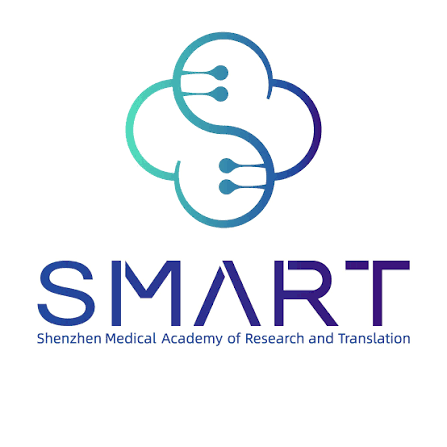

COLLABORATIVE RESEARCH
Molecular Biology

Exploring the biophysics of Nav1.7 sodium channels · 2024
Dr. Xiaojing Pan Laboratory · Shenzhen Medical Academy of Research and Translation
I shadowed graduate students working on plasmid preparation, protein extraction, and purification. This introduced me to the preparation behind experiments on proteins involved in cellular communication.
My contribution: I created short informational videos about laboratory equipment safety and use, shared on BiliBili.
I gained experience in laboratory safety, protocol, and how the collaborative lab environment functions.
COLLABORATIVE RESEARCH
Neuroscience
Studying neural signaling and autism-related behavior · 2025
Dr. Bo Zhang Laboratory · Peking University Graduate School at Shenzhen
I assisted graduate student Heping Zhang with research on G protein-coupled receptors and behavior. I conducted behavioral tests, amplified plasmids, and validated template DNA using PCR.
I also observed brain tissue preparation and imaging, neuronal culture, and other experiments, attended journal clubs, and kept daily lab logs.
Connecting molecular changes with behavior helped focus my interest on neuroscience.
MENTOR-GUIDED INDEPENDENT RESEARCH
Computational Psychology
How users’ requests evolve in AI conversations · 2026
Dr. Chen Hu · Beijing Zhongguancun Academy
I investigate when people continue asking AI for the same kind of help and when they shift tasks or delegate different judgments.
I developed and refined an annotation framework through a 30-conversation pilot, then selected 300 WildChat conversations containing 922 user follow-ups for LLM-assisted analysis.
Research in progress: study design, reproducible sampling, and evidence-based annotation.